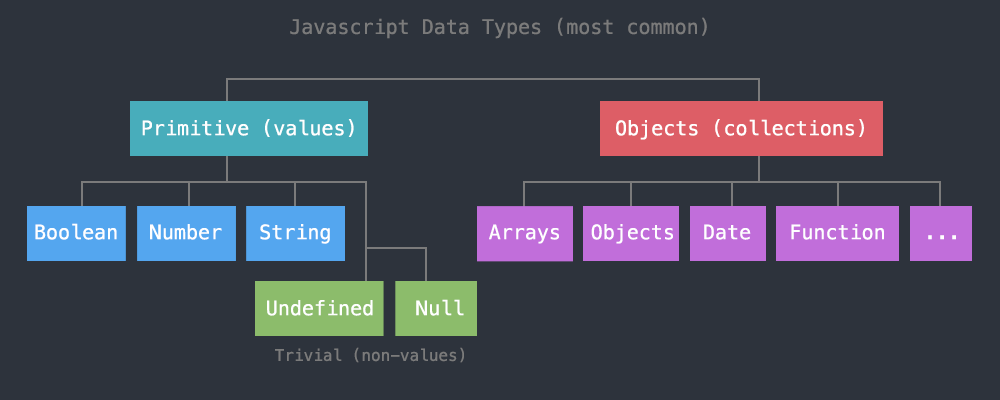
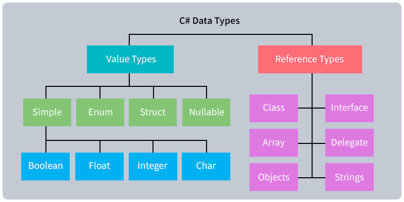

Learn about specific data types used in programming, visualization, gaming, etc.
5 min5 min5 min5 min5 min5 min5 minReview the following sections and perform the activities on your own or with your group.
Perform the task(s) when you see this 👉 emoji
Students who complete the following will be able to:
Complete the following to prepare for this module
A data type defines the kind of data that is stored or used by a program.
Most languages organize data by primitive and non-primitive types. These diagrams show the most common data types in Javascript and C# languages.

The primitive and non-primitive organization structure (a.k.a. value vs. reference) also explains how data is stored in computer memory and affects software production and performance. See Advanced Topics for more.

A data type is different than its value. In this C# example below, 7 is the value of the mid variable and int (integer) is its type.
// Unity C# example
public class Monster
{
int mid = 7;
float health = 0.20f;
}
Some programming languages (e.g. C#, Java, Python) are strongly typed, requiring programmers to predefine what kind of data they are using in variables, parameters, functions, etc. before they actually use them.
Other, loosely typed languages like Javascript, Perl, and PHP, do not require programmers to define their type ahead of time.
// javascript example
var mid = 7;
var health = 0.20;
These common primitive data types (and examples) can be found across many strong- and loosely-typed programming languages and databases.
👉 Presenter Note: Demonstrate these with
typeofin the DevTools Console.
The boolean type can only have one of two values:
true
false
Most programming languages have a default value for a type. When you create a new boolean variable in a strongly-typed language it will be false by default.
Integers (a.k.a. int types) are used to store whole numbers.
-4
1
45
10000000000
Numbers with decimals, also called floats ("floating-point numbers").
3.14
.0000001
10000000000.0
Unlike many other languages, Javascript does not distinguish int from float numbers.
A string is any grouping of letters, words, numbers, or character symbols surrounded by single or double quotes, or back ticks.
"hello world 😀"
'2 be or not 2 be'
`favorite numbers: 1, 2, and 3.14`
Just as there are types that represent data, there are types that represent NO data
var myVar;
myVar // -> undefined
An expression is any unit of code that resolves to a data value. Expressions are the fundamental building blocks of code, and use data ("operands") with operators to perform math, logic, or string calculations.
> prompt where you can enter (input) Javascript code.12
144 produced.12 * 12
typeof operator, Javascript will return a string describing the data's type.typeof 12
typeof (12 * 12)
typeof (typeof (12 * 12))
typeof "hello world!"
typeof (12 * 12) // -> "number"
typeof (typeof (12 * 12)) // -> "string" - The 1st returns "number", a string value, to the 2nd
typeof "hello world!" // -> "string"
555
"555"
`false`
true
555 // -> "number"
"555" // -> "string"
`false` // -> "string"
true // -> "boolean"
Many programming languages allow you to convert a data's type. In Javascript, type conversion can happen intentionally (a.k.a. "explicit conversion"), such as when you use built-in functions to initiate the conversion.
typeof Number("555") // -> "number"
typeof String(555) // -> "string"
It can also happen when it automatically converts your data to another type (a.k.a. "implicit conversion" or "type coercion"). For example, when you use the + operator with two numbers then Javascript will perform arithmetic. But, if one of the operands is a string it will automatically convert all data types to string and then concatenate them into a larger string.
var test = 10;
test + 1 // -> 11
test + " apples" // -> "10 apples"
In addition to primitive data types like boolean, number, and string, many programming languages have types classified as data collections, which can include arrays, objects, as well as more complex entities, hierarchical collections, and lists.
Most languages use the array type to store one or more instances of the same type (or even different types) of data. The instances are separated by commas, enclosed in square brackets. In Javascript, these are both valid arrays:
var numbers = [4,3,2,1];
var greeting = ["hello", "world"];
In Javascript, you can assign or retrieve individual cells from arrays like below. Arrays are zero-indexed so providing 1 between the square brackets gives you the 2nd value:
greeting[1] // -> "world"
The array data type is a common way to store tabular data (rows and columns). To do this, we use an array of arrays, or "two-dimensional array", where each row is its own array:
var cars = [
["make", "model", "year"],
["Pontiac", "Vibe", 2009],
["Honda", "Fit", 2007],
["Chevrolet", "Blazer", 2000],
["Toyota", "RAV4", 1999]
];
To get a "cell" in this table, use the following notation, where the first number is the row, and second is the column:
cars[1][0] // -> "Pontiac"
console.log() by placing the reference to the data point inside the parentheses, like this: console.log(cars[1][0])console.log(cars[3][1]); // -> "Blazer"
console.log(cars[2][2]); // -> 2007
console.log(cars[4][0]); // -> "Toyota"
Javascript contains its own definition of objects, which is slightly different than the way that other languages use objects and classes.
let artist = {
name: "Miles Davis",
instrument: "trumpet"
};
Javascript objects are powerful types because you can store any type of data in them, even arrays, other objects, and functions.
var singer = {
"name": "Bruce Springsteen",
"albums": [
{
"name": "Born to Run",
"year": 1975
}, {
"name": "Born in the U.S.A.",
"year": 1984
}, {
"name": "The Ghost of Tom Joad",
"year": 1995
}
]
};
With Javascript, each data value is assigned to a key, and you access the value using using dot notation. So above, we can access the singer's name using:
singer.name; // -> "Bruce Springsteen"
albums.console.log(singer.name); // -> "Bruce Springsteen"
console.log(singer.albums[0].name); // -> "Born to Run"
console.log(singer.albums[2].year); // -> 1995
Use jsfiddle to explore these primitive and complex data type examples.
Data collections can be stored inside code files, or more often, imported from external files, databases, or API servers. Data exchange formats help to standardize how data is stored and transmitted when you import external data and generally fall into one of the below categories:
CSV, TSV)JSON or XML).See this lesson for more on data exchange formats
Tabular data is a collection of data values arranged in rows and columns. The following is an example of tabular data, displayed in a table:
| make | model | year |
|---|---|---|
| "Pontiac" | "Vibe" | 2009 |
| "Honda" | "Fit" | 2007 |
| "Chevrolet" | "Blazer" | 2000 |
| "Toyota" | "RAV4" | 1999 |
While Excel or Google Sheets might store and display tabular data by adding lines to describe the cells where rows and columns meet, the actual data values in those cells are usually stored (and transmitted) as Comma-separated values.
The above dataset as a CSV (datasets/cars.csv) looks like:
"make", "model", "year"
"Pontiac", "Vibe", 2009
"Honda", "Fit", 2007
"Chevrolet", "Blazer", 2000
"Toyota", "RAV4", 1999
CSV is one of the most common ways that tabular data is stored (in .csv files), exchanged across spreadsheets, flat files, and databases, though you can technically delineate the columns with any unique character.
Note that each row should contain the same number of columns, even if the cell is empty.
More on CSV:
JSON ("JavaScript Object Notation"), based on the Javascript object type, is popular for sending data across networks.
Like Javascript objects, they are hierarchical, use key:value pairs to store data, and are contained within curly braces.
{ "key": "value" }
One drawback to JSON is that it can be sensitive to syntax errors. JSON documents (.json) must validate or they won’t work. For example, unlike a regular Javascript object, all JSON keys must be wrapped in double quotes.
The cars dataset represented as JSON (datasets/cars.json) looks like:
{
"cars": [{
"make": "Pontiac",
"model": "Vibe",
"year": 2009
}, {
"make": "Honda",
"model": "Fit",
"year": 2007
}, {
"make": "Chevrolet",
"model": "Blazer",
"year": 2000
}, {
"make": "Toyota",
"model": "RAV4",
"year": 1999
}]
}
More on JSON:
XML (Extensible Markup Language) is another common hierarchical format for storing and transporting data.
XML shares some features with JSON, since it is also a hierarchical data collection. However it has decreased in popularity because, unlike JSON, XML documents need a higher file size to store and transmit the same data values because, like other markup languages (e.g. HTML), they require open and closing "tags" for every data value. XML is called "extensible" because (unlike HTML) you can name the elements anything you like.
The cars dataset represented as XML (datasets/cars.xml) looks like:
<cars>
<car>
<make>Pontiac</make>
<model>Vibe</model>
<year>2009</year>
</car>
<car>
<make>Honda</make>
<model>Fit</model>
<year>2007</year>
</car>
<car>
<make>Chevrolet</make>
<model>Blazer</model>
<year>2000</year>
</car>
<car>
<make>Toyota</make>
<model>RAV4</model>
<year>1999</year>
</car>
</cars>
More on XML:
In your group, create one dataset to represent each of the following. Select an appropriate data exchange format for each, and check to make sure the dataset is valid!
Data types are important because some data types require more storage than others.
For example, if you store "12345678" in a database as a string, it will require 8+1 bytes. Whereas, the same value 12345678 stored as an integer type only requires 4 bytes.
Many programming languages organize data types by primitive and non-primitive types. This structure, often called value vs. reference, is about how and where the data is actually stored in memory and used by the language.
For example, when you use a value type in a program and send it to a function, a new copy of that data, its "value", is passed to the function. But, when you define a reference type the data is stored in only one location (the "heap"), and when you pass it to other functions then only a pointer or "reference" to that location in memory is passed.
Reference types are created on the heap, value types are created on the stack. If you create too many copies of a value type then you can crash your program thanks to a "stack overflow".